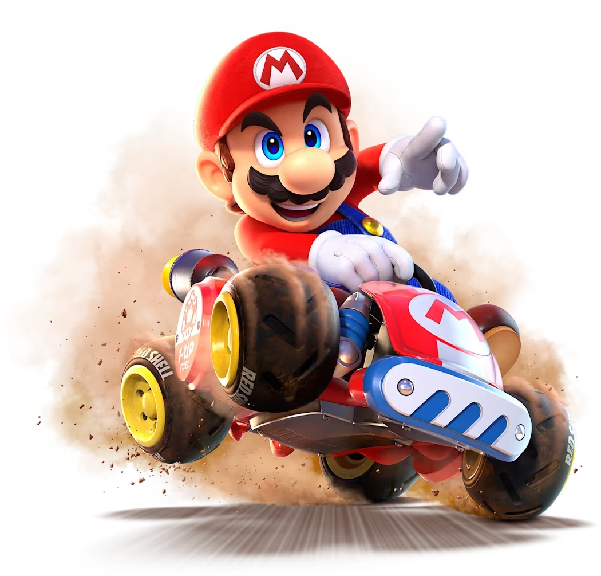
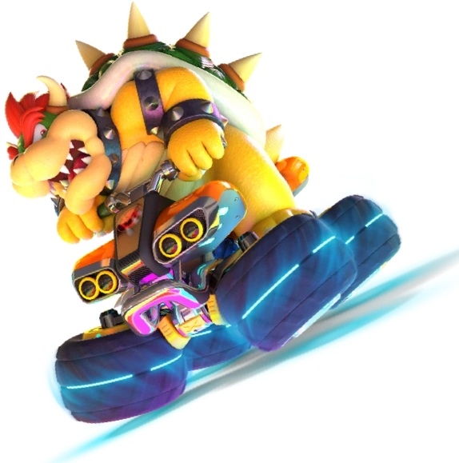

Mario Kart 8: Game and Competitive Analysis



What is Mario Kart?
Back 50 years ago when the digital age was just beginning arcades ruled the gaming industry. All across the United States arcades began to rise in popularity from 1970 on. Many different gaming classics came from this era. You have some more niche games like Dragon's Lair and Street Fighter. And some all time classics like Pac-Man and Donkey Kong. Moving through the decades we come to an era of diversification in video games. One of the many popular genres that takes center stage is the racing game.
Over the years many different racing games have held the crown as king over all others in the genre. For the arcade period mentioned previously the company "Sega" made games such as Outrun that flooded into arcades across the country. Moving to the start of the 21st century the "Need For Speed" franchise moved into homes allowing gamers to race from the comfort of there couch. However during this time a new racing game was being developed in Japan. This game series would change not only the racing game sphere but entirity of video games itself with its creative mechanics and likeability by all ages. This game is Mario Kart.
A Comparison Over History
To get a better understanding of how prominent Mario Kart is as a racing game franchise it is easy to make a comparison. The simplist comparison is that of both to other games in the same genre of racing video games and that of comparisons to other Mario titles. For instance the below chart shows how dominant Mario Kart is when it comes to overall sales.
Game Play Mechanics
Mario Kart 8 - Deluxe games stores different statistics (main stats and hidden stats) for drivers, karts, tires and gliders. Below visualizations will specifically concentrate on the main statistics of the game, will also visualize the overall statistics of the selected build.
- Weight ➜ Affects collisions between vehicles. Heavier vehicles tend to bump ligher vehicles with greater force. However, relative speed and boosts also contributes in action.
- Acceleration ➜ Determines how fast the vehicle increase it's speed over time. This also includes how well the vehicle can revocer it's speed when slowed down or stopped.
- Ground Speed: Determines the maximum speed of the vehicle on the ground.
- Ground Handling ➜ Determines how well the kart can be handled and how sharp the karts can steer and how much the drift can be extended or accentuated. This also determines how fast automatic drifts are charged.
- On Road Traction ➜ Determines the degree of the kart being slipped on certain surfaces of the road. Slippery surfaces like mud, snow and ice will slow down the karts that have bad On Road Traction.


Competetive Scene


- You can select the season you prefer from the season dropdown. It will visualize the countries of the top 10 players of the selected season. Circles will be large if that country consist more players.
- The size of the circles will indicate how many players are present from that country.
- The gold circle will represent the Rank 1 player is from that country. If this country includes Rank 1, Rank 2 and Rank 3, the circle will be gold since the Rank 1 player is included and is the highest.
- The silver circle will represent the Rank 2 player is from that country. If this country includes Rank 2 and Rank 3, the circle will be silver since the Rank 2 player is included and is the highest.
- The bronze circle will represent the Rank 3 player is from that country. The dark blue circle will represent all the players from the ranks 4 to 10.
- When All Seasons are selected, the circles will be light blue. It will visualize the countries of the top 10 players from all the seasons (4 to 13).
From these different countries far and wide players compete in a variety of different ways. Some players choose the competetive battle ground of online versus play. These versus play matchs against other online oppenents can either be in standard Nintendo ranking system play or online lounges. What will be focused on next is more of a track race style of competition. Time trials are a form of Mario Kart competition that involves players all around the globe racing for the fastest possible time. Of Mario Karts some 96 tracks almost all of the tracks have experienced the fastest racing time dip at least 7 or 8 seconds. Some of the tracks have there world records tracked over time and those results are listed below.
The most obvious standout feature about all of these graphs is the large drop from the first world record times to the 4th or 5th world record times. When a game like this first releases the time trial world record times are highly volatile. This is because of two reasons...
1) No one has played the game and everyone is still figuring out the feel for the game
2) People attempt to get the world record with sub-optimal gameplay as quickly as possible so they can get there names on the leaderboards.
You may also notice that the graphs look like a jagged staircase. One of the most important concepts in time-trial based competetion in video games are discoveries. Discoveries of things like new driving techniques or ways to skip part of the track allow for big chunks of time save that is not possible from micro managing your driving. A good metaphor to explain this would be the progression of bronze tools to iron tools. Sure the bronze tools still work but there is an obvious advantage to using the iron tools. This advantage often changes the route for the track and forces everyone who is aiming to achieve a world record time to either adapt to the new strategy or be left behind.